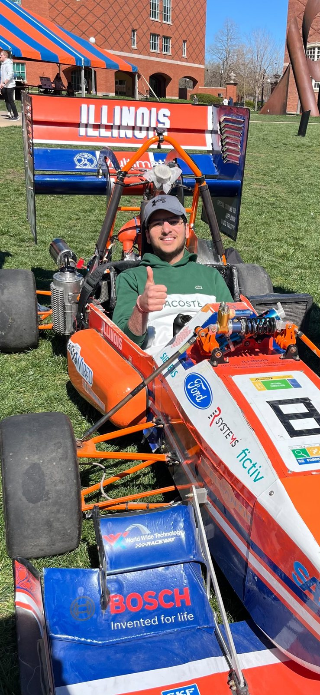
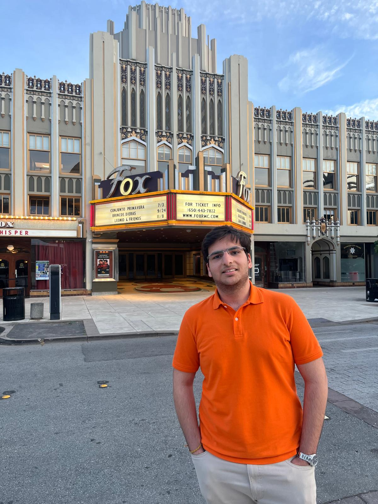
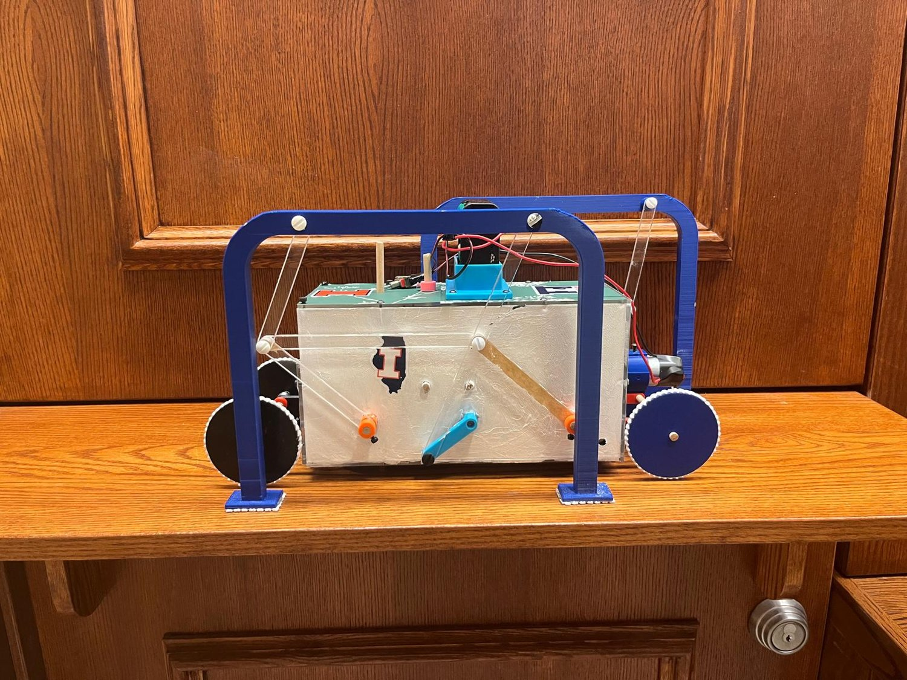

I love pool.
Getting a little better every day.

My love for engineering started with breaking things. Watching parts crack in different ways always struck a chord with me. Maybe that is why solid mechanics is one of my research interests today.
I love electromechanical products and the way electrical and mechanical engineering come together to make something work. I traveled 7,000 miles from home to study mechanical engineering at the University of Illinois Urbana Champaign.
I love storytelling. I think everyone has to be a storyteller. Life is a story, and you keep adding new elements to it as you go. When I share an idea, I want the other person to envision what I am seeing, not just understand what I mean.
A few things you should know about me ↘
Because a résumé doesn't tell you everything.
Getting a little better every day.
Major foodie. Café Colucci in Berkeley? A must-try.
I love solid mechanics and simulations so much that I built a truss finite-element solver from scratch.
Check it out ↗My engineering origin story involves taking things apart just to see how they worked.
Formula 1 fan. If you know, you know.
Currently wearing a Tissot PR 100. Let's see where the collection goes.
Real products, real constraints, real lessons. Here's a little about the teams and engineering challenges I've worked on.

Not just what I made — what challenged me, what changed, and what I learned in the process.
 01 / COMPOSITES + STRUCTURES
01 / COMPOSITES + STRUCTURESDesigning and validating a carbon-fiber monocoque with Python layup optimization and physical testing.

02 / MECHANICAL DESIGNDesigned, analyzed, and manufactured a Chebyshev linkage robot with a dispensing mechanism.
 03 / ENGINEERING DESIGN
03 / ENGINEERING DESIGNElectromechanical assembly, Scotch yoke mounting, impact calculations, and FEA.
 04 / NUMERICAL METHODS + FEA
04 / NUMERICAL METHODS + FEADeveloped a planar FEA solver and compared five optimization trials with different starting material distributions.
CATIA V5, Creo, Siemens NX, 3DEXPERIENCE, GD&T, DFM/DFA
ANSYS, SimSolid, FEA, Composites, FMEA, Root Cause Analysis
Python, MATLAB, VBA, Java, SQL, Git, Power Automate
Machining, Injection Molding, Rapid Prototyping, Instron, Metrology
Have an idea, a challenge, or just want to talk engineering? I'd love to hear from you.